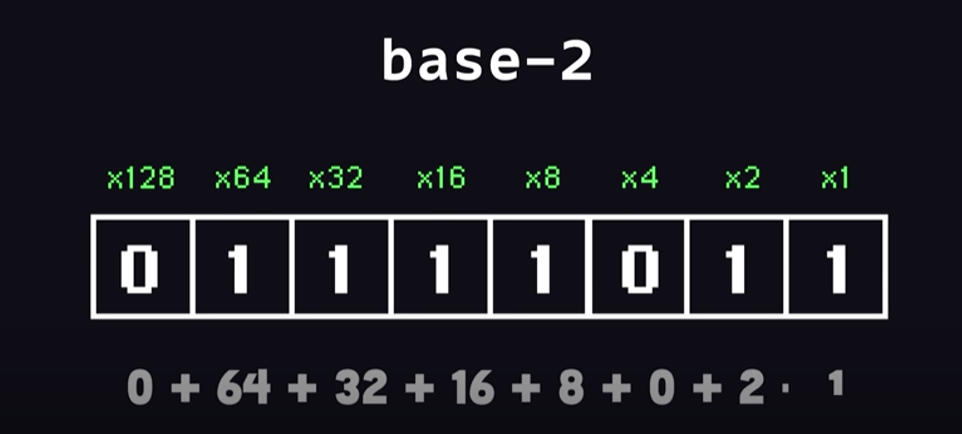
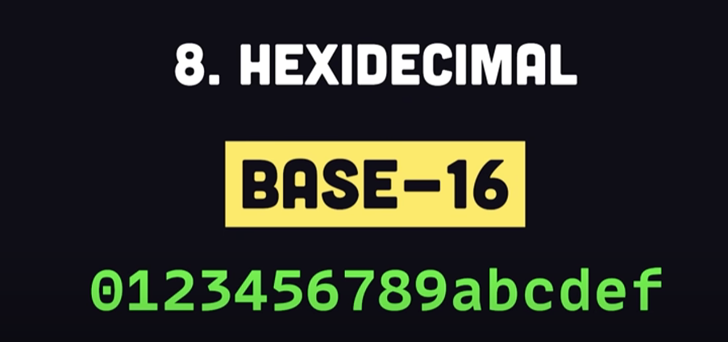
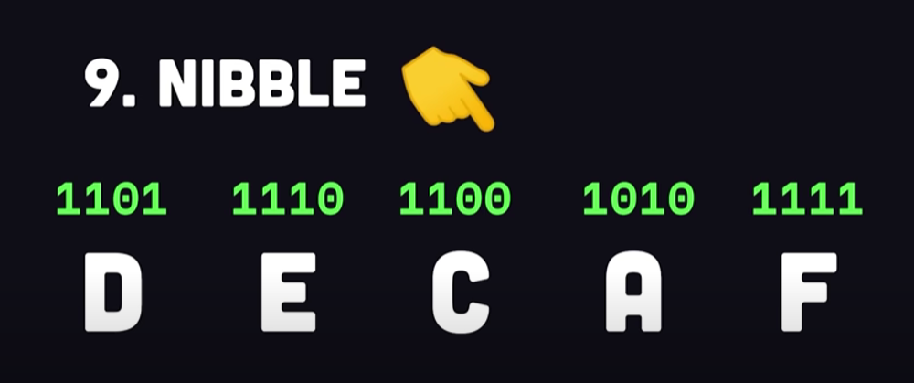
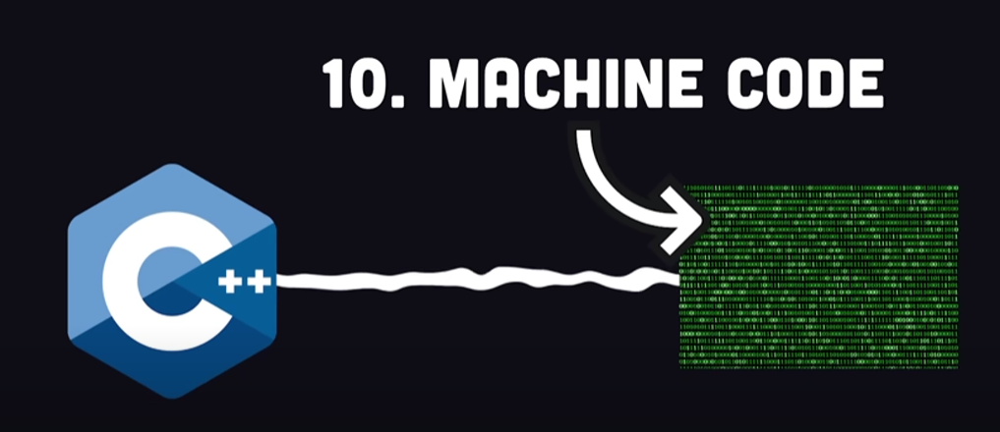

Computer Science
Introduction to Computer Science
Computer science is the study of computation, automation, and information.Computer science spans theoretical disciplines (such as algorithms, theory of computation, information theory, and automation) to practical disciplines (including the design and implementation of hardware and software). Computer science is generally considered an academic discipline and distinct from computer programming.
Computer science focuses on the development and testing of software and software systems. It involves working with mathematical models, data analysis and security, algorithms, and computational theory. Computer scientists define the computational principles that are the basis of all software.
Computer Science is the study of algorithms, including :
- Their formal and mathematical properties
- Their hardware realizations
- Their linguistic realizations
- Their applications
Some terminology used repeatedly:
- Algorithm: a set of steps that defines how a task i performed
- Program: A representation of an algorithm
- Programming: the process of developing a program
- Software: prgorams and algorithms
- Hardware: physical equipment
Roots of Computing
Herman Hollertih's Tabulating Machine.
- Former MIT
lecturer, developed a machine to read punch cards
-
Insipered by a train conductor to punch tickets
- Used in the 1980 US Census
- Comapny became IBM in 1924
What is the Importance of Computer Science?
Even when we think we’ve “unplugged” from society, there are devices running in the background throughout our homes and in our neighborhoods. It’s safe to say we live in a world that relies heavily on technology. In this society, two types of people have emerged: those who let technology run their lives and those who create technology that changes lives. Which side would you rather be on? Computer scientists solve complex problems such as predicting natural disasters, mapping viral outbreak patterns, improving our health care system and making education accessible. For example, online education was something people once scoffed at, and now, people can learn almost anything online from YouTube tutorials to free learning platforms, such as Khan Academy.
What are the Benefits of Computer Science?
Most companies are tech companies in some capacity, whether it’s a brick-and-mortar retailer moving into the e-commerce space or using an app to get your favorite food delivered to your door, computer science technology has improved our access so that almost anything we want is at our fingertips. Salary may depend on experience and industry, but the U.S. Bureau of Labor Statistics (BLS) reports a median pay of $110,140 per year or $52.95 per hour. According to the BLS, there were 1,847,900 jobs for software developers in 2020External link:open_in_new, which includes applications and systems software developers. The field is expected to grow 22% between 2020 and 2030, which is more than two times faster than the average growth for the U.S. job market. Clearly, there’s a need for computer science-related technical skills as companies upgrade their business models. A career in computer science, especially software development, is an innovative space and can be exciting work for those who enjoy lifelong learning.
Some misconceptions about CS:
1. I can put together my own PC, am good with Windows, and can surg the net with ease, so I know CS.
2. Computer Science is the study of how to write computer programs
3. Computer Science is the study of the uses and applications of computers and software
Some Computer Science Concepts Explained:
1. Binary:
- Binary is just a system for counting. Like the base 10 used when you count on your fingers. But the difference is that it has only 2 characters : 1 & 0.
Humans have a hard time reading binary, so most often it is repsented in a Hexidecimal base-16 format, where 10 numbers
and 6 letters can represent a 4 bit group called a nibble.
As a developer, when you write code in a programming language, it will eventually be converted into machine code which is a binary format that can be decoded and executed by the CPU.
2. Variables: :
There are Dynamically typed languages, where you dont need to tell the program exactly which data type is assigned to the variable, and there are Statically Typed languages, where you need to specify the data type in your code.
When you define a variable, it is stored somewhere in the memory on the hardware.
3. Data Structures:
When it comes to practical software engineering, one of the most
fundametnal things we do is organize data in a data structure.
The most useful data structure is the Array.